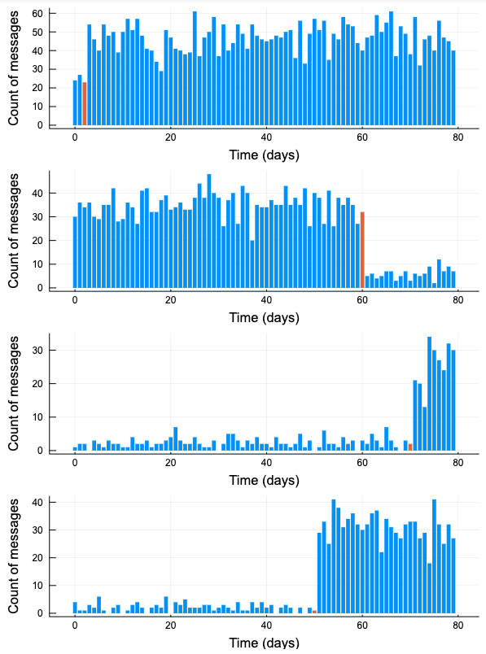

引き続き「Pythonで体験するベイズ推論」の第2章の新しいデータセットの作成をJuliaでやってみる。
新しいデータセットの生成
PyMCについての説明はスキップして、シミュレーションによるメッセージ数のデータ生成から行う。
Mamba.jlは分布の作成にDistributions.jlを使っているので、シミュレーションだけ行いたかったらDistributionsを using すれば十分。
using Distributions
using Plots
データセットの作成とプロットは下のようになる。
function plot_artificial_sms_dataset()
tau = rand(DiscreteUniform(0, 80))
theta = 20
lambda_1, lambda_2 = rand(Exponential(theta), 2)
lambda_ = cat(fill(lambda_1, tau), fill(lambda_2, 80 - tau), dims = 1)
data = @.rand(Poisson(lambda_))
barc = fill(1, 80)
barc[tau] = 2
bar(0:80-1, data, linecolor = :transparent, fillcolor = barc,
xlabel = "Time (days)", ylabel = "Count of messages", label = "")
end
plts = []
for i in 1:4
push!(plts, plot_artificial_sms_dataset())
end
plot(plts..., layout = (4, 1), size = [600, 800])

Plots.jlでPythonのMatplotlibと同様に複数のSubplotsを表示するには、一旦list (e.g. plt )にプロット結果を受けておいて、最後に一気に
plot(plts…, layout = (4, 1), size = [600, 800])
として表示すればできる。
plot(plts, layout = (4, 1), size = [600, 800])
だと MethodError: no method matching MethodError(::String) が出てダメだった。
モデルシミュレーションのコード -> https://nbviewer.jupyter.org/github/matsueushi/bayesian_methods_julia/blob/master/chapter2_simulate_model.ipynb